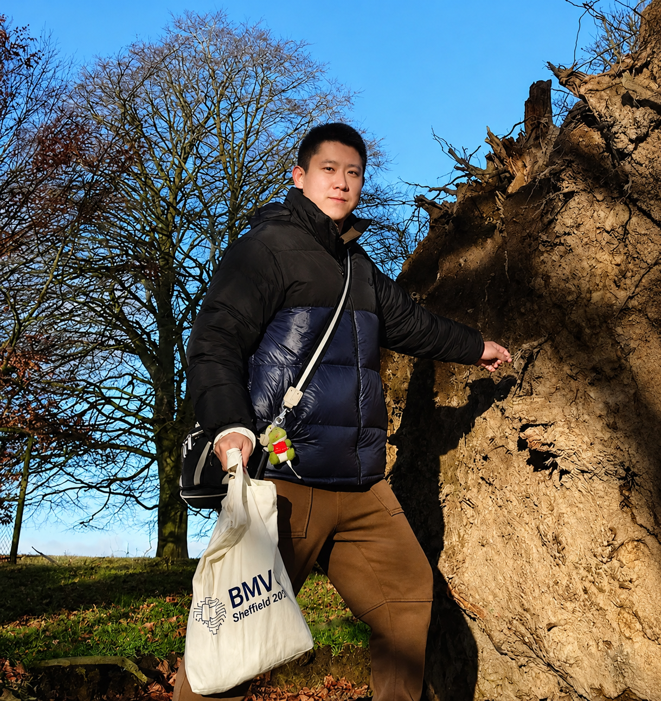

Ziteng Cui
崔子藤
- Specially Appointed Assistant Professor (特任助教)
- MIL Lab, RCAST
- The University of Tokyo
-
From 2027Assistant Professor
AI Thrust, HKUST (Guangzhou)
cui [at] mi.t.u-tokyo.ac.jp
Research Interests
- Physical AI
- Computational Photography
- 3D Computer Vision
- Low-level Vision
- Camera & Imaging Systems
I am a specially appointed assistant professor at the University of Tokyo, affiliated with the MIL Lab at RCAST. I received my Ph.D. from the University of Tokyo, my M.S. from Shanghai Jiao Tong University, and my B.S. from Harbin Institute of Technology.
My research goal is to integrate physical intrinsic knowledge into real-world downstream applications — perception, 3D vision, and robotics. Most of my work starts from how a camera actually forms an image: RAW sensor signals, illumination, and the physics of light transport, and asks how that knowledge can make modern vision models hold up outside the lab.
I am always open to academic collaborations — feel free to reach out.
Recruiting · Spring/ Fall 2027 Intake
I will join HKUST(GZ) AI Thrust as an Assistant Professor and establish the Robust AI in the Wild (RAW) Lab. I am recruiting PhD students, Master students, and visiting students / research assistants for 2027 in embodied AI, computational photography, and 3D vision. Email me at cui [at] mi.t.u-tokyo.ac.jp if you are interested.
我将加入香港科技大学（广州）人工智能学域担任助理教授，并组建 Robust AI in the Wild Lab， 现招募 2027 年入学的具身智能 / 计算摄影学 / 三维视觉方向博士生、硕士生及访问学生 / 科研助理。 如果你对我的研究方向感兴趣，欢迎随时发邮件聊聊 🙌
News
- One paper RealX3D accepted by IJCV 2026. Congrats to the team.
- Three papers accepted by ECCV 2026. Congrats to the team.
- Invited talk at the AIGENS workshop, CVPR 2026.
- First-author paper RAW-Adapter (extended version) accepted by TPAMI 2026.
- Received the Dean's Award (工学系研究科長賞), Graduate School of Engineering, UTokyo.
- Two papers (including one Findings paper) accepted by CVPR 2026. Congrats to the team.
- Co-hosting the 3D Restoration and Reconstruction (3DRR) Challenge and the Efficient Super-Resolution Challenge at the CVPR NTIRE workshop.
- One paper LHSI accepted by WACV 2026. Congrats to the team.
- Two papers Dr. RAW and I2-NeRF accepted by NeurIPS 2025. Congrats to the team.
- Selected for the Doctoral Consortium at BMVC 2025, and invited talk at the Smart Camera workshop.
- One paper AR-Talk accepted by SIGGRAPH Asia 2025. Congrats to the team.
- Successfully defended my Ph.D. dissertation — Dr. Cui now.
- Selected for the Doctoral Consortium at CVPR 2025.
- First-author paper Luminance-GS accepted by CVPR 2025.
- First-author paper IAC accepted by BMVC 2024.
- First-author paper RAW-Adapter accepted by ECCV 2024.
- First-author paper Aleth-NeRF accepted by AAAI 2024.